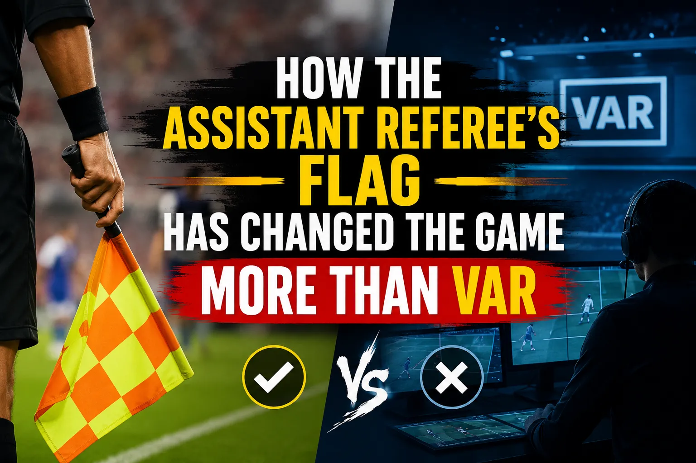

How the Assistant Referee's Flag Has Changed the Game More Than VAR

Everyone talks about VAR. It dominates post-match debates, fills social media feeds, and has its own dedicated segment on every football broadcast. But there's a quieter revolution that's been shaping the sport for decades, one that most fans never properly credit. The assistant referee's flag — that slender strip of checkered fabric raised by a linesman standing on the touchline — has done more to fundamentally alter how football is played, coached, and tactically conceived than video review ever has or likely ever will.
This isn't a contrarian take for the sake of it. When you trace the evolution of defensive lines, pressing systems, the offside trap, the high-line revolution, and even the pace of the modern game, the assistant referee's flag sits at the centre of every turning point. VAR is a tool of correction. The assistant referee flag is a tool of creation — it has actively sculpted the sport we watch today.
The History: How the Linesman's Role Actually Began
Most fans assume assistant referees have always been part of football. They haven't. The Laws of the Game were originally designed for just one referee. It wasn't until 1891 that a second official was first trialled, and even then the role was rudimentary. The assistant referee in association football as we know it — with a flag, a specific position along the touchline, and responsibility for offside — wasn't formally codified until the early 20th century.
For decades, the linesman was a peripheral figure. Their flag went up, the referee sometimes listened, and the game carried on. The offside law itself was also radically different. When the offside rule was changed in 1925 from requiring three opponents between the attacker and the goal line to just two, it was the assistant referee's flag that became the enforcement mechanism. That single rule change — and the flag that enforced it — doubled goal-scoring rates almost overnight and turned football from a cautious, attritional sport into something more recognisable to modern eyes.
The flag didn't just enforce a rule. It created an entire tactical universe around it.
Why the Assistant Referee Flag Matters More Than You Think
Here's a number that should reframe how you think about officiating: across world football, the assistant referee's flag still determines over 90% of all offside decisions. VAR only operates in top-tier leagues with the technology and budget to support it. In the Eredivisie, Ligue 1, Serie A, La Liga, and the Premier League, VAR is available. But even in those leagues, the initial call — the one that either lets play continue or raises the flag to stop it — is still made by the assistant referee in real time. VAR merely reviews the tight calls after the fact.
In leagues without VAR — which includes the vast majority of professional football worldwide, from the lower English leagues to African top flights to South American domestic competitions — the assistant referee's flag is the only mechanism. There is no safety net. One flag, one decision, one moment that changes everything.
The Controversies That Proved the Flag's Power
If you want to understand why the assistant referee's flag has changed the game, look at the moments where it went wrong. These aren't just bad calls — they're inflection points that led to rule changes, technology adoption, and tactical shifts.
Frank Lampard's Ghost Goal — England vs Germany, 2010 World Cup
During the Round of 16 match in Bloemfontein, Frank Lampard struck a shot that hit the crossbar, bounced well over the goal line, and spun back out. The assistant referee, Maurizio Mariani, did not raise his flag. England were denied a legitimate equaliser at 2-1 down. Germany went on to win 4-1. This single non-call became the catalyst for goal-line technology. It didn't come immediately — it took until 2012 for FIFA to formally approve goal-line technology and until the 2014 World Cup in Brazil for it to be used in a World Cup match. But the assistant referee's failure to flag that goal line incident directly created the pathway for electronic officiating.
Here's the thing most people miss: the assistant referee's job description at the time didn't explicitly require them to make a goal-line call unless they were positioned on the goal line itself. The Laws of the Game placed that responsibility on the referee. The flag controversy exposed a structural gap in officiating — and the response was technological, not procedural.
Fernando Torres — Barcelona vs Chelsea, 2012 Champions League Semi-Final
In the second leg at Camp Nou, Torres collected a through ball and raced toward goal with no defender within 20 yards. He squared the ball into an empty net. The assistant referee raised his flag for offside. It was the wrong call — replays showed Torres was clearly onside. Chelsea held on to win the tie and eventually lifted the Champions League trophy in Munich. One flag, one season-defining outcome, one of the most consequential wrong calls in football history.
The Torres incident didn't just affect Chelsea's treble-winning season. It fundamentally altered how managers approached defensive lines. If an assistant referee could incorrectly deny a clear goal with the raise of a flag, how could teams reliably use the offside trap? The answer was they couldn't — not without consequence.
Benteke vs Liverpool — The "Play to the Whistle" Principle
Christian Benteke's disallowed goal against Liverpool in 2015 illustrated another layer of the flag's power. The assistant flagged for offside, the referee blew his whistle, but the ball had already crossed the line. The goal was chalked off despite being legitimate. This led to further discussion about the IFAB protocol for situations where the whistle is blown early — and whether assistant referees should delay their flag when an attack is clearly developing. The resulting protocol change (the "delayed flag" approach) was a direct response to the flag's power to prematurely end attacking moves.
| Moment | Year | Impact | Resulting Change |
|---|---|---|---|
| Lampard ghost goal vs Germany | 2010 | Goal-line non-call in World Cup R16 | Goal-line technology approved 2012, mandatory by 2014 |
| Torres offside vs Barcelona | 2012 | Clear onside wrongly flagged | Increased demand for replay review, early VAR discussions |
| Benteke disallowed vs Liverpool | 2015 | Legitimate goal wiped by early flag | Delayed flag protocol introduced for clear attacks |
| Sterling offside vs Watford | 2019 | Centimetre-level call by flag | Premier League adopts semi-automated offside for 2024-25 |
| Argentina offside vs Saudi Arabia | 2022 | Three goals disallowed by SAOT | Global adoption of semi-automated offside accelerated |
How the Flag Drove Tactical Evolution
This is where the assistant referee's flag truly earns the title of football's most underrated tactical force. Every major defensive innovation of the last 40 years has been a direct response to the flag — and the limitations of the human holding it.
The Offside Trap
Coaches in the 1970s and 1980s, particularly Arrigo Sacchi at AC Milan, realised they could weaponise the offside law. By stepping up in unison just before the moment of a pass, defenders could catch attackers in offside positions. The assistant referee's flag was the enforcement mechanism — if the timing was right, the flag went up, and the attack was nullified. Sacchi's famous AC Milan side of 1988-90 didn't just play beautiful football; they manipulated the offside line with a precision that relied entirely on the assistant referee's flag to function. Without the flag, the trap has no teeth.
Sacchi's innovations at Milan were born from his obsession with compressing space. He famously told his players that the pitch was "not 100 metres but 25" — referring to the zone between his defensive and attacking lines. The entire system worked because the assistant referee's flag existed to punish attackers who mistimed their runs. The flag was the referee of the offside trap. Without it, there is no trap.
The High Defensive Line
Fast forward to the 2010s and 2020s. Pep Guardiola's Barcelona, J�rgen Klopp's Liverpool, and Mikel Arteta's Arsenal all pushed their defensive lines higher than any previous generation. The reasoning was simple: compress the pitch, win the ball higher, and create more attacking opportunities. But this only works if the offside line is accurately policed. If an assistant referee flags incorrectly — if a player is onside but flagged offside, or vice versa — the entire tactical structure collapses.
The high line is essentially a bet on the accuracy of the assistant referee's flag. When the flag is correct, the defending team benefits enormously (catching attackers offside regularly). When the flag is incorrect, the consequences are catastrophic (conceding clear-cut chances or having legitimate goals disallowed).
The High Line Equation
Every high-line manager is making the same calculation: "The assistant referee's flag is accurate enough that the benefits of compressing the pitch outweigh the risks of a wrong call." Before VAR, this was a genuine gamble. Teams like Klopp's Liverpool in 2018-19 operated a high line that was frequently caught out by marginal offside calls. The 2018 Champions League semi-final against Barcelona saw Liverpool's high line exploited repeatedly, but also saw legitimate Liverpool attacks flagged offside in moments that could have changed the tie. The assistant referee's flag was the invisible hand shaping the tactical chess match.
The Pressing Revolution
Pressing — the tactical approach of winning the ball back high up the pitch through coordinated team pressure — has become the dominant philosophy in modern football. But pressing only works effectively when you can compress space. And compressing space means pushing your defensive line forward. And pushing your defensive line forward means trusting the assistant referee's flag to be accurate.
Consider that pressing as a formalised tactical approach barely existed before the 1970s. Arrigo Sacchi refined it at Milan. Louis van Gaal perfected it at Ajax. Ralf Rangnick, Thomas Tuchel, and Klopp all built careers on it. At every stage, the assistant referee's flag was the silent partner in the pressing equation. The flag determined whether the offside trap worked, whether the compressed space held, and whether the press could continue or was undone by a mistimed call.
Betting Insight: How the Flag Affects In-Play Markets
Understanding the assistant referee's flag has direct betting implications. In leagues without VAR, a team playing a high defensive line is more likely to have legitimate goals disallowed by incorrect offside flags. If you're betting on a team known for a high line in a non-VAR league, factor in the risk of disallowed goals. Check out our guides on in-play betting and referee statistics for betting for more on how officiating decisions affect outcomes.
The Pre-VAR vs Post-VAR Reality
VAR was supposed to make the assistant referee's flag obsolete. It hasn't. What it has done is change the relationship between the flag and the final decision. Here's how the numbers break down:
| Metric | Pre-VAR Era (Before 2018-19) | Post-VAR Era (2019 onwards) |
|---|---|---|
| Offside decisions per match (Premier League avg) | 3.2 | 3.1 |
| Accuracy of assistant referee offside calls | ~83% | ~96% (with VAR review) |
| Goals disallowed for offside per season | ~70 | ~45 |
| Incorrect offside calls per season | ~20 | ~3 (corrected by VAR) |
| Delayed flag protocol adoption | Rare | Standard in VAR leagues |
The accuracy improvement is real. But here's the nuance that most analyses miss: the assistant referee still makes the initial call in every single offside situation. VAR only intervenes on "clear and obvious" errors — and in practice, that means only marginal calls get reviewed. The vast majority of offside decisions are still determined by the human with the flag, in real time, from a position on the touchline. VAR is a safety net, not a replacement.
In non-VAR leagues — which represent the overwhelming majority of professional football globally — the assistant referee's flag remains the sole arbiter of offside. There is no review, no correction, no second chance. When the flag goes up, that's the decision. Period.
By the Numbers: The Flag's Reach
Approximately 210 national football associations are members of FIFA. Of these, fewer than 30 currently operate VAR in their top-tier domestic leagues. That means the assistant referee's flag is the primary — and often only — mechanism for offside enforcement in roughly 85% of the world's professional leagues. Even in VAR-enabled leagues, the flag still makes the initial call on every offside situation. The human element hasn't been removed. It's just been supplemented.
Semi-Automated Offside Technology: The Flag's New Partner
The 2022 FIFA World Cup in Qatar introduced Semi-Automated Offside Technology (SAOT), the most advanced offside system ever deployed. Using limb-tracking cameras positioned in the stadium roof, the system can detect offside positions to within millimetres and produce a 3D animation of the decision within seconds.
SAOT was used to disallow three Argentina goals in their famous group-stage match against Saudi Arabia — including two from Lionel Messi. In previous World Cups, those goals would likely have stood. The technology changed outcomes that the human assistant referee couldn't have detected with the naked eye.
But here's the crucial detail: SAOT doesn't operate independently. The assistant referee still raises the flag (or delays it) based on their judgment. The technology then confirms whether the call was correct. If the assistant doesn't flag and play continues, SAOT doesn't retroactively intervene (except in the narrow circumstances where a goal is scored from an immediately preceding offside position). The flag remains the trigger. The technology is the verification.
At the 2023 FIFA Women's World Cup in Australia and New Zealand, SAOT was again deployed, and its accuracy was praised. But the system still depends on the assistant referee making the correct initial judgment about when to flag and when to delay. In the semi-final between Spain and Sweden, several tight offside calls went through the SAOT review process — but the initial flag from the assistant referee was what initiated each review. Without the flag, there's no trigger for the technology.
The Delayed Flag: How the Game Adapted
One of the most significant procedural changes in modern football was the introduction of the "delayed flag" protocol. Before this change, assistant referees would raise their flag the moment they judged a player to be offside — even if the attack was developing and a goal might be scored. This led to the absurd situation where a legitimate goal would be scored and then disallowed because the assistant had flagged offside moments before the ball crossed the line.
The delayed flag protocol, now standard in VAR-enabled competitions, instructs assistant referees to keep the flag down when an attacking move is clearly developing, even if they believe offside has occurred. Instead, they signal to the referee by placing the flag behind their back, and the referee can allow play to continue. If a goal is scored, VAR reviews the offside call. If no goal is scored, the assistant raises the flag and the original offside decision is confirmed.
This change was a direct response to the flag's destructive power. The flag was so effective at ending attacks that it was creating injustice — goals were being disallowed for marginal offside calls that wouldn't have been detected in previous decades. The delayed flag protocol was football's way of saying: "The flag is too powerful to be used in real time on tight calls."
The protocol has measurably changed the game. In the Premier League since its adoption, more goals have been scored from situations where the flag would historically have gone up immediately. The average number of goals per match in the Premier League has risen from approximately 2.69 in 2018-19 (pre-VAR) to 2.85 in 2023-24 — and while that increase has multiple causes, the delayed flag is a documented contributing factor.
What This Means for Football Bettors
Understanding the assistant referee's flag isn't just an academic exercise. It has real implications for football betting markets — particularly in leagues without VAR or in competitions where the flag's impact is most pronounced.
Betting Strategy: The Flag Factor
- Check the competition's VAR status: In non-VAR leagues, incorrect offside calls are more frequent. Teams that play high defensive lines are more vulnerable to disallowed goals from wrong flag decisions.
- Monitor the assistant referee: Just like checking the centre referee's stats (see our referee statistics guide), some assistant referees have measurably higher offside call accuracy than others. This data is harder to find but exists in detailed match reports.
- Factor in delayed flag games: In VAR competitions, the delayed flag means more goals will stand from marginal offside positions. This slightly favours attacking teams and high-scoring outcomes.
- Consider tactical setups: Teams that play a high line and press aggressively (like the tactical approaches we analyse here) generate more offside calls. In non-VAR leagues, this creates variance. In VAR leagues, the technology smooths out the variance but the flag still initiates the process.
Pro Tip: The 2-0 Lead and the Flag
Teams leading 2-0 or 3-0 often drop deeper defensively, reducing the number of offside situations. This is partly tactical (protecting the lead) and partly psychological (defenders become more conservative when they don't need to push up). In matches where a team takes an early lead, the number of offside calls in the second half typically drops by 30-40%. If you're betting on total offsides or related markets, the game state matters enormously.
The Global Perspective: Where the Flag Still Rules
While English and European football fans obsess over VAR, the assistant referee's flag remains the most important officiating tool across the globe. In the Nigerian Professional Football League, the Kenyan Premier League, the South African PSL, and leagues across Asia, South America, and Central America, the flag is still the sole arbiter of offside decisions. There is no technology, no review, no safety net.
This creates a fundamentally different betting landscape. In non-VAR leagues:
- Offside call accuracy is lower, leading to more disallowed goals from incorrect calls
- Teams that exploit the offside trap can gain a bigger advantage (because there's no technology to correct incorrect calls in their favour)
- The "home assistant referee" factor becomes more pronounced — while assistant referees are supposed to be neutral, research from academic studies on officiating bias has documented subtle home-favourable tendencies in marginal calls
- Injuries and time-wasting from offside-related stoppages are more common because there's no efficient technology to speed up the process
For bettors focusing on African or lower-tier leagues, understanding the assistant referee's flag — and the variance it introduces — is arguably more important than understanding any tactical system. The flag is the single biggest source of randomness in these competitions.
VAR vs the Flag: A False Dichotomy
The popular narrative frames VAR and the assistant referee's flag as opponents — technology versus humanity, accuracy versus tradition. But that's a misunderstanding of how the system actually works. In practice, they're complementary. The assistant referee's flag provides the real-time call that keeps the game flowing. VAR provides the safety net that catches the marginal errors. One works in the moment; the other works after the fact. Together, they've created the most accurate officiating system football has ever had.
But the flag's contribution to this system is undervalued. Without the assistant referee's initial judgment, VAR would have nothing to review. Without the flag going up or staying down in real time, there's no trigger for the technology. The flag is the foundation. VAR is the extension.
And in the 85% of professional football where VAR doesn't operate, the flag is everything. It's the sole mechanism that enforces one of the sport's most important laws. It determines goals, changes results, shapes tactics, and influences how billions of people experience the game every weekend.
Frequently Asked Questions
How accurate are assistant referee offside calls?
Studies by FIFA and the IFAB have shown that assistant referees correctly identify offside calls approximately 83-87% of the time when working without VAR assistance. With VAR review, the combined accuracy of the offside decision rises to over 96%, as the technology catches the marginal errors that humans miss.
Does the assistant referee still make offside calls in VAR matches?
Yes. The assistant referee still makes the initial judgment in every offside situation, even in matches with VAR. In the delayed flag protocol, the assistant signals the referee discreetly if they believe offside has occurred during an attacking move, and VAR then reviews the situation if a goal is scored. The flag remains the trigger for the entire process.
How many leagues use VAR worldwide?
As of 2026, approximately 25-30 national leagues operate VAR in their top-tier domestic competitions, including the Premier League, La Liga, Serie A, Bundesliga, Ligue 1, and leagues in Turkey, Portugal, Brazil, Argentina, Saudi Arabia, and others. The vast majority of FIFA's 211 member associations do not have VAR, meaning the assistant referee's flag remains the only offside enforcement mechanism in those leagues.
What is Semi-Automated Offside Technology?
Semi-Automated Offside Technology (SAOT) is a system of limb-tracking cameras installed in stadiums that can detect offside positions to within millimetres. It was first used at the 2022 FIFA World Cup in Qatar and produces a 3D animation of the offside decision within seconds. SAOT works alongside the assistant referee's flag, not as a replacement for it.
Understand the Game. Bet Smarter.
From referee stats to tactical analysis, WinFulltime gives you the edge.
Get Today's Predictions →